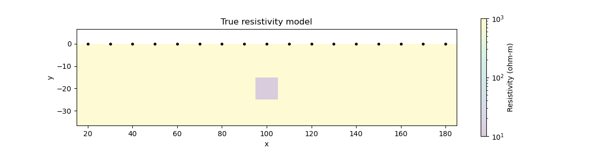
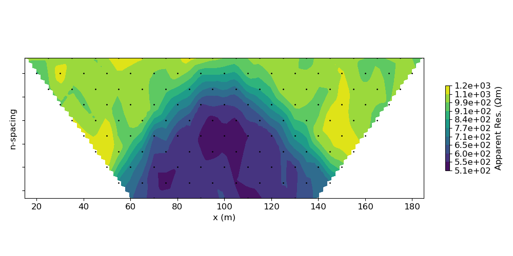
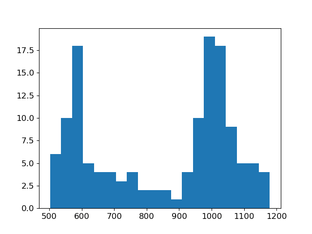
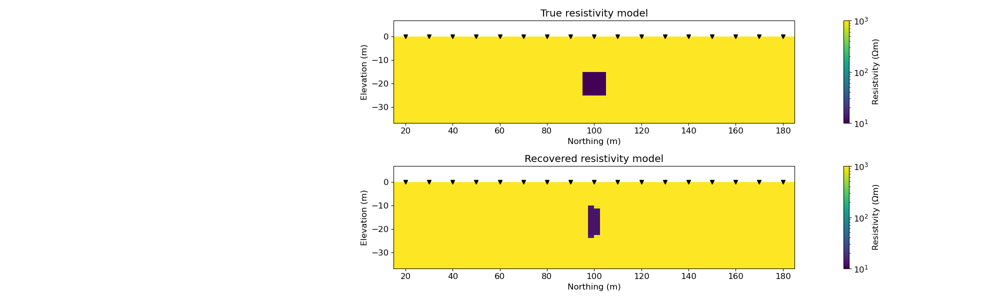

Note
Click here to download the full example code
Parametric DC inversion with Dipole Dipole array¶
This is an example for a parametric inversion with a DC survey. Resistivity structure of the subsurface is parameterized as following parameters:
sigma_background: background conductivity
sigma_block: block conductivity
block_x0: horizotontal location of the block (center)
block_dx: width of the block
block_y0: depth of the block (center)
block_dy: thickness of the block
User is promoted to try different initial values of the parameterized model.
- 
- 
- 
- 
Out:
/home/vsts/work/1/s/SimPEG/electromagnetics/static/resistivity/IODC.py:188: UserWarning:
code under construction - API might change in the future
dx is set to 2.5 m (samllest electrode spacing (10.0) / 4)
dz (1.25 m) is set to dx (2.5 m) / 2
/usr/share/miniconda/envs/deploy/lib/python3.7/site-packages/discretize/mixins/mpl_mod.py:1166: MatplotlibDeprecationWarning:
Passing parameters norm and vmin/vmax simultaneously is deprecated since 3.3 and will become an error two minor releases later. Please pass vmin/vmax directly to the norm when creating it.
/usr/share/miniconda/envs/deploy/lib/python3.7/site-packages/discretize/mixins/mpl_mod.py:1166: MatplotlibDeprecationWarning:
Passing parameters norm and vmin/vmax simultaneously is deprecated since 3.3 and will become an error two minor releases later. Please pass vmin/vmax directly to the norm when creating it.
SimPEG.InvProblem will set Regularization.mref to m0.
SimPEG.InvProblem is setting bfgsH0 to the inverse of the eval2Deriv.
***Done using same Solver and solverOpts as the problem***
model has any nan: 0
============================ Inexact Gauss Newton ============================
# beta phi_d phi_m f |proj(x-g)-x| LS Comment
-----------------------------------------------------------------------------
x0 has any nan: 0
0 0.00e+00 3.98e+03 0.00e+00 3.98e+03 1.64e+04 0
1 0.00e+00 2.11e+03 2.56e-02 2.11e+03 1.51e+03 0
2 0.00e+00 1.11e+03 2.38e+00 1.11e+03 4.85e+03 0 Skip BFGS
3 0.00e+00 7.65e+02 2.35e+00 7.65e+02 3.19e+02 0
4 0.00e+00 6.02e+02 5.15e+00 6.02e+02 2.63e+03 8
5 0.00e+00 4.32e+02 9.00e+00 4.32e+02 2.54e+03 0
6 0.00e+00 3.46e+02 1.12e+01 3.46e+02 1.52e+04 9
7 0.00e+00 2.37e+02 1.13e+01 2.37e+02 1.82e+03 0
8 0.00e+00 2.29e+02 1.17e+01 2.29e+02 7.13e+02 0 Skip BFGS
9 0.00e+00 1.40e+02 3.47e+02 1.40e+02 6.03e+02 3 Skip BFGS
10 0.00e+00 1.34e+02 3.52e+02 1.34e+02 5.81e+02 5 Skip BFGS
------------------------- STOP! -------------------------
1 : |fc-fOld| = 6.0418e+00 <= tolF*(1+|f0|) = 3.9786e+02
1 : |xc-x_last| = 1.7023e+00 <= tolX*(1+|x0|) = 1.0246e+01
0 : |proj(x-g)-x| = 5.8135e+02 <= tolG = 1.0000e-01
0 : |proj(x-g)-x| = 5.8135e+02 <= 1e3*eps = 1.0000e-02
1 : maxIter = 10 <= iter = 10
------------------------- DONE! -------------------------
/usr/share/miniconda/envs/deploy/lib/python3.7/site-packages/discretize/mixins/mpl_mod.py:1166: MatplotlibDeprecationWarning:
Passing parameters norm and vmin/vmax simultaneously is deprecated since 3.3 and will become an error two minor releases later. Please pass vmin/vmax directly to the norm when creating it.
from SimPEG.electromagnetics.static import resistivity as DC, utils as DCutils
import discretize
from SimPEG import (
maps,
utils,
data_misfit,
regularization,
optimization,
inversion,
inverse_problem,
directives,
)
import matplotlib.pyplot as plt
from matplotlib import colors
import numpy as np
from pylab import hist
try:
from pymatsolver import PardisoSolver as Solver
except ImportError:
from SimPEG import SolverLU as Solver
def run(
plotIt=True,
survey_type="dipole-dipole",
rho_background=1e3,
rho_block=1e2,
block_x0=100,
block_dx=10,
block_y0=-10,
block_dy=5,
):
np.random.seed(1)
# Initiate I/O class for DC
IO = DC.IO()
# Obtain ABMN locations
xmin, xmax = 0.0, 200.0
ymin, ymax = 0.0, 0.0
zmin, zmax = 0, 0
endl = np.array([[xmin, ymin, zmin], [xmax, ymax, zmax]])
# Generate DC survey object
survey = DCutils.gen_DCIPsurvey(
endl, survey_type=survey_type, dim=2, a=10, b=10, n=10
)
survey = IO.from_abmn_locations_to_survey(
survey.locations_a,
survey.locations_b,
survey.locations_m,
survey.locations_n,
survey_type,
data_dc_type="volt",
)
# Obtain 2D TensorMesh
mesh, actind = IO.set_mesh()
# Flat topography
actind = utils.surface2ind_topo(mesh, np.c_[mesh.vectorCCx, mesh.vectorCCx * 0.0])
survey.drape_electrodes_on_topography(mesh, actind, option="top")
# Use Exponential Map: m = log(rho)
actmap = maps.InjectActiveCells(mesh, indActive=actind, valInactive=np.log(1e8))
parametric_block = maps.ParametricBlock(mesh, slopeFact=1e2)
mapping = maps.ExpMap(mesh) * parametric_block
# Set true model
# val_background,val_block, block_x0, block_dx, block_y0, block_dy
mtrue = np.r_[np.log(1e3), np.log(10), 100, 10, -20, 10]
# Set initial model
m0 = np.r_[
np.log(rho_background),
np.log(rho_block),
block_x0,
block_dx,
block_y0,
block_dy,
]
rho = mapping * mtrue
rho0 = mapping * m0
# Show the true conductivity model
fig = plt.figure(figsize=(12, 3))
ax = plt.subplot(111)
temp = rho.copy()
temp[~actind] = np.nan
out = mesh.plotImage(
temp,
grid=False,
ax=ax,
gridOpts={"alpha": 0.2},
clim=(10, 1000),
pcolorOpts={"cmap": "viridis", "norm": colors.LogNorm()},
)
ax.plot(survey.electrode_locations[:, 0], survey.electrode_locations[:, 1], "k.")
ax.set_xlim(IO.grids[:, 0].min(), IO.grids[:, 0].max())
ax.set_ylim(-IO.grids[:, 1].max(), IO.grids[:, 1].min())
cb = plt.colorbar(out[0])
cb.set_label("Resistivity (ohm-m)")
ax.set_aspect("equal")
ax.set_title("True resistivity model")
plt.show()
# Show the true conductivity model
fig = plt.figure(figsize=(12, 3))
ax = plt.subplot(111)
temp = rho0.copy()
temp[~actind] = np.nan
out = mesh.plotImage(
temp,
grid=False,
ax=ax,
gridOpts={"alpha": 0.2},
clim=(10, 1000),
pcolorOpts={"cmap": "viridis", "norm": colors.LogNorm()},
)
ax.plot(survey.electrode_locations[:, 0], survey.electrode_locations[:, 1], "k.")
ax.set_xlim(IO.grids[:, 0].min(), IO.grids[:, 0].max())
ax.set_ylim(-IO.grids[:, 1].max(), IO.grids[:, 1].min())
cb = plt.colorbar(out[0])
cb.set_label("Resistivity (ohm-m)")
ax.set_aspect("equal")
ax.set_title("Initial resistivity model")
plt.show()
# Generate 2.5D DC problem
# "N" means potential is defined at nodes
prb = DC.Simulation2DNodal(
mesh, survey=survey, rhoMap=mapping, storeJ=True, solver=Solver
)
# Make synthetic DC data with 5% Gaussian noise
data = prb.make_synthetic_data(mtrue, relative_error=0.05, add_noise=True)
# Show apparent resisitivty pseudo-section
IO.plotPseudoSection(data=data.dobs / IO.G, data_type="apparent_resistivity")
# Show apparent resisitivty histogram
fig = plt.figure()
out = hist(data.dobs / IO.G, bins=20)
plt.show()
# Set standard_deviation
# floor
eps = 10 ** (-3.2)
# percentage
relative = 0.05
dmisfit = data_misfit.L2DataMisfit(simulation=prb, data=data)
uncert = abs(data.dobs) * relative + eps
dmisfit.standard_deviation = uncert
# Map for a regularization
mesh_1d = discretize.TensorMesh([parametric_block.nP])
# Related to inversion
reg = regularization.Simple(mesh_1d, alpha_x=0.0)
opt = optimization.InexactGaussNewton(maxIter=10)
invProb = inverse_problem.BaseInvProblem(dmisfit, reg, opt)
target = directives.TargetMisfit()
invProb.beta = 0.0
inv = inversion.BaseInversion(invProb, directiveList=[target])
prb.counter = opt.counter = utils.Counter()
opt.LSshorten = 0.5
opt.remember("xc")
# Run inversion
mopt = inv.run(m0)
# Convert obtained inversion model to resistivity
# rho = M(m), where M(.) is a mapping
rho_est = mapping * mopt
rho_true = rho.copy()
# show recovered conductivity
fig, ax = plt.subplots(2, 1, figsize=(20, 6))
out1 = mesh.plotImage(
rho_true,
clim=(10, 1000),
pcolorOpts={"cmap": "viridis", "norm": colors.LogNorm()},
ax=ax[0],
)
out2 = mesh.plotImage(
rho_est,
clim=(10, 1000),
pcolorOpts={"cmap": "viridis", "norm": colors.LogNorm()},
ax=ax[1],
)
out = [out1, out2]
for i in range(2):
ax[i].plot(
survey.electrode_locations[:, 0], survey.electrode_locations[:, 1], "kv"
)
ax[i].set_xlim(IO.grids[:, 0].min(), IO.grids[:, 0].max())
ax[i].set_ylim(-IO.grids[:, 1].max(), IO.grids[:, 1].min())
cb = plt.colorbar(out[i][0], ax=ax[i])
cb.set_label("Resistivity ($\Omega$m)")
ax[i].set_xlabel("Northing (m)")
ax[i].set_ylabel("Elevation (m)")
ax[i].set_aspect("equal")
ax[0].set_title("True resistivity model")
ax[1].set_title("Recovered resistivity model")
plt.tight_layout()
plt.show()
if __name__ == "__main__":
run()
plt.show()
Total running time of the script: ( 0 minutes 26.963 seconds)
Estimated memory usage: 13 MB